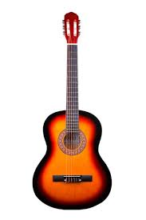

Klasik gitar (klasik gitar,[1] naylon telli gitar veya İspanyol gitarı olarak da bilinir), klasik müzikte kullanılan gitar ailesinin bir üyesidir. Bağırsak veya naylondan yapılmış telleri olan bu akustik ahşap telli çalgı, metal telleri kullanan akustik ve elektro gitarın öncüsüdür. Klasik gitar on beşinci ve on altıncı yüzyılda İspanyol vihuela ve gittern'den türetilmiştir, daha sonra on yedinci ve on sekizinci yüzyıl Barok gitarına ve daha sonra on dokuzuncu yüzyılın ortalarında modern klasik gitara dönüşmüştür.[2] Sağ elini kullanan bir gitarist için sol bacakta düzgün bir şekilde tutulur. Modern klasik gitar terimi bazen klasik gitarı en geniş anlamda klasik veya daha spesifik olarak erken gitar olarak da adlandırılan eski gitar formlarından ayırmak için kullanılır.
